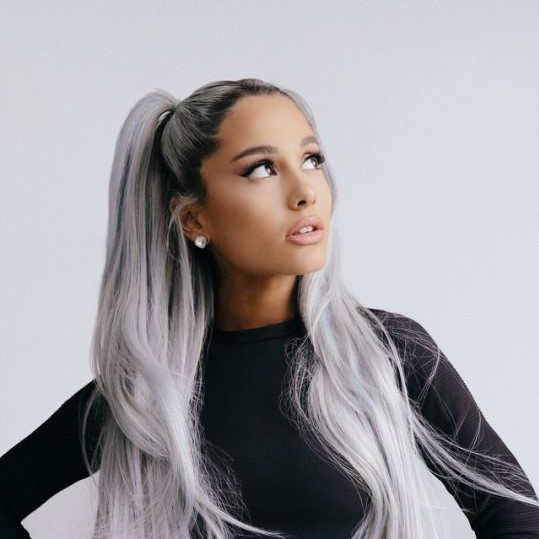

56,667,295 Monthly Listeners

Ariana Grande
About Artist
A television star turned pop diva, Ariana Grande emerged in the mid-2010s as an heir to the throne of Mariah Carey. Blessed with powerful vocals that belied her petite frame, Grande had greater singing chops than many of her peers, and her Babyface-produced 2013 debut, Yours Truly, underscored her debt to '90s soul. Nevertheless, her music was flexible enough to incorporate hip-hop and EDM, as proved by her 2014 smash hit single "Problem," featuring Iggy Azalea.
A native of Boca Raton, Florida, where she was born in 1993 to graphic designer Edward Butera and Joan Grande (the CEO of Hose-McCann Communications), Grande began singing and acting at an early age, appearing in local theater productions. In 2008, when she was 15 years old, she landed the role of Charlotte in the Broadway production of 13; her performance was well-received, winning a National Youth Theatre Association Award. Following an appearance in the 2010 Desmond Child-written musical Cuba Libre, Grande was cast as Cat Valentine in the Nickelodeon television program Victorious. The show ran until 2012, at which time Grande's Cat Valentine was spun off into a show called Sam & Cat, which also starred Jennette McCurdy of iCarly.
As she kept herself busy with television, Grande began to pursue a musical career. She frequently made appearances at sporting events and with symphonies, and she made her first appearances on record via the soundtracks to Victorious. In 2011, she released the single "Put Your Hearts Up," which was cut during sessions for a teen-oriented pop album; she later disowned the single due to its kiddie feel. Grande felt much more comfortable with "The Way," her 2013 single featuring Mac Miller. This signaled a mature direction and audiences responded, taking it to the Top Ten in the U.S., where it was eventually certified triple platinum. It was the first single from her 2013 debut, Yours Truly, which also featured hits in "Baby I" and "Right There."
At the end of the year she released a seasonal EP called Christmas Kisses, but her real efforts went into the recording of her second album, My Everything. Preceded by the single "Problem" -- a song that featured a guest spot from Iggy Azalea, the "it girl" of the summer of 2014; it peaked at two on the U.S. charts and was certified double platinum -- the album featured a host of different producers, including Max Martin, Shellback, Ryan Tedder, and Benny Blanco. It was released at the end of August 2014, hitting number one on charts across the globe. Subsequent singles featured assists by Zedd ("Break Free"), Jessie J and Nicki Minaj ("Bang Bang"), and the Weeknd ("Love Me Harder"). At one point in 2014, three of her songs were in the Billboard Top Ten at the same time, a feat matched only be Adele. By the time fifth single "One Last Time" charted in early 2015, My Everything had sold nearly 600,000 copies.
As that album's cycle wound down, Grande guest-starred on Ryan Murphy's campy slasher series Scream Queens and she also recorded another holiday EP, Christmas & Chill. In October 2015, Grande released the single "Focus," which debuted at number seven on the Hot 100 and was certified platinum the following January. That February, she announced her third album, Dangerous Woman, and released the album's title track as a single in March. The song hit number eight on the Hot 100, making Grande the first artist to have the lead single from each of her first three albums debut in the Top Ten. Featuring collaborations with Macy Gray, Future, and Nicki Minaj, the album appeared in May 2016 and debuted at number two. It eventually went platinum, helped by a trio of Top Ten hits and a Grammy nomination for Best Pop Vocal Album. Grande began 2017 by duetting with John Legend on "Beauty and the Beast," the title track for Disney's live-action remake of their 1991 animated classic. She then mounted her Dangerous Woman Tour, performing across North America and Europe during the first half of 2017.
Tragedy struck on May 22, 2017, when a suicide bomber attacked Grande's concert at the Manchester Arena in Manchester, England. Grande returned to performing on June 4, when she held a star-studded charity concert called One Love Manchester to aid the victims of the bombing. Following the show, she resumed the Dangerous Woman Tour, which concluded in Hong Kong that September.
In April 2018, Grande kicked off promotion for her fourth album, Sweetener, by issuing the single "No Tears Left to Cry," which debuted at number three on the Hot 100. It was followed by "God Is a Woman" later that year. Upon its release in August 2018, Sweetener debuted at number one in both the U.S. and U.K. ~ Stephen Thomas Erlewine, Rovi